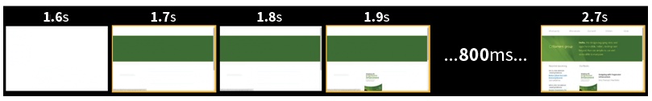
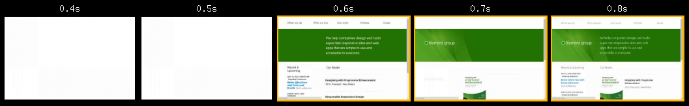
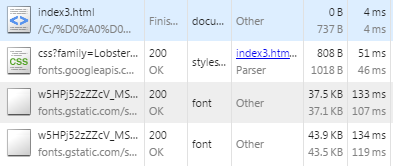
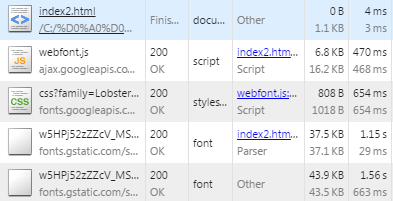
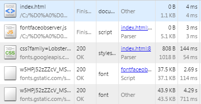

WebFonts и FontFaceObserver
подгрузка шрифтов
WebFonts. История
WebFonts - это технология использования сторонних шрифтов на своей веб-странице, один из примеров:

Если начинать с истоков, тег font был введен в 1995 году, а уже в 1996 было написано программное определение на CSS. Начиная с версии CSS 2.0 была введена загрузка и синтез шрифта в браузерах, но тем не менее еще тогда популярный, а сейчас уже старый и не актуальный IE не имел поддержки загрузки шрифтов, что мешало бурной моде нововведения, использования шрифтов на своем сайте.
Теперь уже веб-шрифты в современном интернете это давно устоявшаяся вещь, на разных сайтах мы можем использовать разного рода шрифты, которые в свою очередь не включены в поставку той или иной операционной системы, однако есть нежелательный побочный эффект, о чем мы сегодня и поговорим.
Форматы файлов
Для подключения шрифтов используется программная вставка в CSS, так называемые @-правило. И так, в простейшей форме @font-face это эдакая декларация, выглядит она следующим образом:
/* Объявляем шрифт */
@font-face {
font-family: 'Имя шрифта';
src: url('путь/до/него');
}
/* Применяем шрифт */
p {
font-family: 'Имя шрифта', Arial;
}
TTF или OTF — привычный нам файл шрифта, но подгружаемый с сервера на время просмотра сайта;
WOFF — незащищенный архив исходника OTF или TTF, пожалуй, самый важный формат, который поддерживают большинство популярных браузеров, а файлы в WOFF обычно 2–2,5 раза легче, чем исходные;
EOT — внедряемый TT OpenType архив, имеющий механизмы защиты, нужен для поддержки старых браузеров Internet Explorer (начиная с IE8 кроме TrueType кривых, поддерживаются и PostScript);
SVG — для поддержки браузера Safari.
@font-face {
font-family: 'Имя_шрифта_любое';
src: url('Имя_файла_шрифта.eot');
src: url('Имя_файла_шрифта.eot?#iefix') format('embedded-opentype'),
url('Имя_файла_шрифта.woff') format('woff'),
url('Имя_файла_шрифта.ttf') format('truetype'),
url('Имя_файла_шрифта.svg#DSNoteRegular') format('svg');
font-weight: normal;
font-style: normal;
}
Подготовленные к внедрению (@font-face) на сайт шрифты на сегодняшний день должны быть сразу в нескольких форматах. Вы поняли, что существуют некоторые расхождения, так же как существует не один вид операционных систем. Форматов шрифтов достаточно много, но конкретный будет работать только в конкретном браузере, вот такая вот судьба. Что же касается этих самых форматов, отчего их так много нужно указывать при подключении, то вот, пожалуйста, они нужны для кроссбраузерной поддержки сайта.
Ежели вы хотите использовать вместо файла зашифрованный код, в этом случае к нам на помощь приходит base64, который работает по тому же принципу и с изображениями, однако для старого IE base64 не обрабатывается.
@font-face {
font-family: 'Имя_шрифта_любое';
src: url('Имя_файла_шрифта.eot');
}
@font-face {
font-family: 'Имя_шрифта_любое';
src: url(data:font/woff;charset=utf-8;base64,ДАННЫЕ) format('woff'),
url(data:font/truetype;charset=utf-8;base64,ДАННЫЕ) format('truetype'),
url('Имя_файла_шрифта.svg#Имя_файла_шрифта') format('svg');
font-weight: normal;
font-style: normal;
}
Embedded OpenType?
Если вы могли заметить, то подключаемые шрифты для IE имеют строчку с таким параметром:
src: url('Имя_файла_шрифта.eot?#iefix') format('embedded-opentype')
В классике, мы должны были указать с вами именно так:
src: url('Имя_файла_шрифта.eot') format('embedded-opentype')
но при добавлении символа "?" после формата шрифта, мы принудительно указываем браузеру не читать последующее указание - format('embedded-opentype'). Internet Explorer поддерживает вложение шрифтов через так называемый фирменный Embedded OpenType стандарт, начиная с версии IE 4.0. Он использует методом управления цифровыми правами для предотвращения копирования шрифтов, которые распространяются по лицензии.
Что если не поддерживается шрифт в браузере?
Давным-давно уже были придуманы обходные пути, так называемые "костыли", для решения отображения того или иного шрифта. Бывают такие моменты, когда шрифт был разработан только в формате SVG, или же только в формате TTF.
1. В стародавние времена разработчики подключали изображение, которое в свою очередь было текстом набранным в визуальном редакторе. Однако сейчас это считается плохим тоном, ибо поддержка довольна затруднительна (нужно снова открывать редактор, чтобы изменить текст картинки) , соответственно, пользователь не может скопировать текст с картинки.
2. Также распространенным являлось использование flash-решений.
3. Другим решением является использование Javascript, чтобы заменить текст с VML (для Internet Explorer) или SVG (для всех остальных браузеров).
А какие проблемы еще могут возникнуть?
Браузер будет пытаться синхронизировать подгрузку шрифта, он будет стараться спрятать текст, то есть сделать его невидимым, пока шрифт не был подгружен. Этот эффект называют FOIT, эффект "белой вспышки".
Один из веб-разработчиков Bram Stein опубликовал статью о том, как он исправил ситуацию, написав собственную реализацию полифила, в дальнейшем я опишу его реализацию и изложение проблемы.
Эффект вспышки
Эффект FOIT в таких браузерах как Safari, Chrome, Opera, Firefox имеет тенденцию скрывать текст в течение максимум 30 секунд перед отказом в получении шрифта, после чего устанавливается шрифт по умолчанию.
Пример того, как загружается шрифт:
И все-таки, 3 секунды это долгое время!
Что же можно сделать?
Изначальный подход заключался в том, чтобы включить преобразование файлов шрифта в данные URIs так, чтобы те шрифты могли быть включены непосредственно в определения семейства шрифтов в файле CSS. Загружая этот файл CSS асинхронным способом, можно гарантировать, что браузер немедленно отдаст текст в странице, используя кастомные шрифты, а новые шрифты применилась бы, как только CSS был бы загружен.
Однако, как обычно, в любом эксперименте есть побочный эффект.
Изначально Bram Stein использовал кастомный шрифт, но после того как его шрифт был подгружен, происходило «мерцание», в примере на 0.7 секунде:
Короче говоря, мерцание происходит тогда, когда браузер пытается отобразить шрифт из font-family и применить его в html. Шрифт, определенный в @font-face декларации, который не был еще загружен.
Bram Stein показал как правильно подключать шрифты, он разработал скрипт, альтернатива скрипта от google для асинхронной подгрузки шрифтов, это скрипт - FontFaceObserver.
Пробуем
Анализ
Стандартное подключение от Google
Честно говоря, используя больше одного шрифта на сайте можно конкретно замедлить скорость загрузки страницы сайта, тем самым увеличивая общее время загрузки. Google Fonts API позволяет быстро добавить шрифт на сайт, используя генератор шрифтов, тем самым быстрее проектировать свой сайт. Однако, нужно помнить об эффекте FOIT. Общее время загрузки: 322 мс

Web Font Loader от Google
Web Font Loader - JavaScript библиотека для расширенной работы с API, библиотека, которая дает нам больше контроля над подгрузкой шрифта, чем стандартный API Google Fonts. Скрипт позволяет нам использовать множество шрифтов, подгружая их последовательно. В отличие, от стандартного подключения, на слабых соединениях показывается текст со стандартным шрифтом, до тех пор пока не будет загружен шрифт. Общее время загрузки: 1132 мс

FontFaceObserver
FontFaceObserver - это JavaScript библиотека (5кб), так называемый подгрузчик совместимый с любым веб-обслуживанием шрифта. Скрипт позволяет уведомить нас о том, загрузился ли шрифт или нет, позволяет отслеживать событие после загрузки и до загрузки шрифта. Общее время загрузки: 159 мс
Документация (eng)
Использование скрипта
<style>
@import url(http://fonts.googleapis.com/css?family=НАЗВАНИЕ_ШРИФТА&subset=cyrillic,latin);
/* шрифт по умолчанию, до тех пор пока не подгружен новый шрифт */
body {font-family: sans-serif;}
/* новый шрифт */
.fontOneLoad body {
font-family: 'НАЗВАНИЕ_ШРИФТА', cursive;
}
</style>
<script src='js/fontfaceobserver.js'></script>
<script>
// иницицилизация
var fontOneLoad = new FontFaceObserver('НАЗВАНИЕ_ШРИФТА', {});
fontOneLoad
.check()
.then(function () { // событие, когда шрифт загружен
// добавляем класс тегу html
document.documentElement.className += " fontOneLoad";
});
</script>